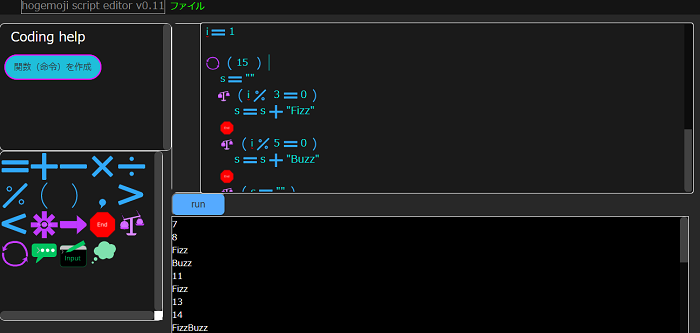

hogemoji script
プログラミング言語のグローバル化と教育目的の利用を考慮して開発されたプログラミング言語。
絵文字を使用してプログラミングすることにより、言語の壁を解決しようと言うプロジェクトです。
要は、テキストプログラミング言語のテキストのところを絵文字に変えただけです。
これはエディタの画面です。
分かりやすいUIと絵文字があり、絵文字や文字をエディタに入力していくことでプログラミングをすることができます。

今はまだあまり成長していませんが、これからこのプロジェクトも成長すると勝手に願っています。
Doc
https://rihitosan.com/blog/hogemoji_docintr.html
DEMO
https://rihitosan.com/tools/hogemoji_script/
Github
https://github.com/frozelab/hogemoji_script/